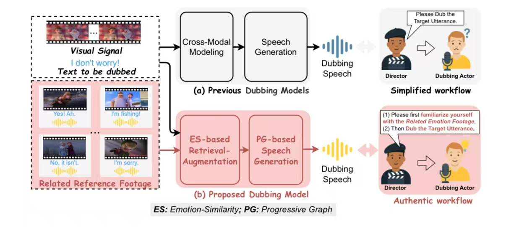
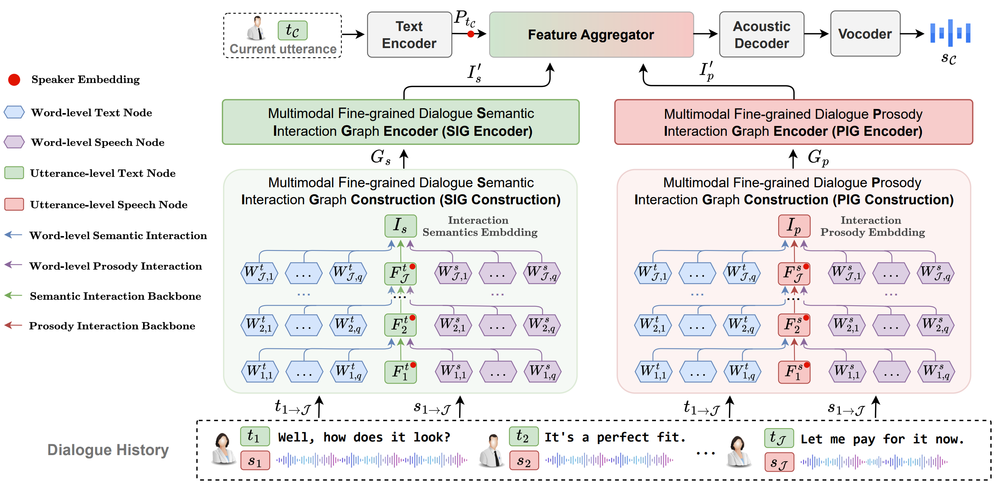
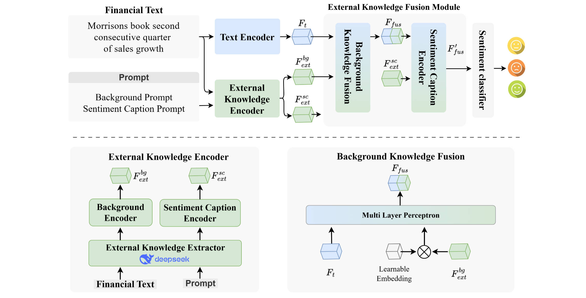
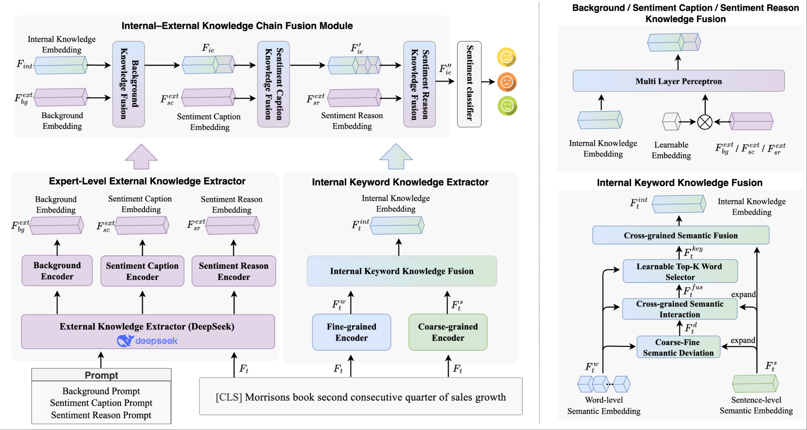

👨🏻💻 About Me
Hi! I am Zhenqi Jia (贾真琦). My graduate advisor is Prof. Rui Liu.
Stay humble, stay hungry, keep learning.
I look forward to becoming friends with you! 😊

Hi! I am Zhenqi Jia (贾真琦). My graduate advisor is Prof. Rui Liu.
Stay humble, stay hungry, keep learning.
I look forward to becoming friends with you! 😊

Towards Authentic Movie Dubbing with Retrieve-Augmented Director-Actor Interaction Learning. (Poster)
Rui Liu, Yuan Zhao, Zhenqi Jia. (三作)

Multimodal Fine-grained Context Interaction Graph Modeling for Conversational Speech Synthesis. (Poster)
Zhenqi Jia, Rui Liu, Berrak Sisman, Haizhou Li. (一作)
[Demo]

Intra- and Inter-modal Context Interaction Modeling for Conversational Speech Synthesis. (Oral)
Zhenqi Jia, Rui Liu. (一作)
[Demo]

External Financial Knowledge Fusion for Accurate Financial Sentiment Analysis. (Oral)
Lei Shi, Zhenqi Jia, Rui Liu. (二作)

Mcdubber: Multimodal context-aware expressive video dubbing. (Oral)
Yuan Zhao, Zhenqi Jia, Rui Liu⋆, De Hu, Feilong Bao, and Guanglai Gao. (二作)

Retrieval-Augmented Dialogue Knowledge Aggregation for expressive conversational speech synthesis.
Rui Liu, Zhenqi Jia, Feilong Bao, Haizhou Li. (导师外一作)
[Demo]

Expert-Level Financial Sentiment Analysis via Internal and External Financial Knowledge Fusion.
Lei Shi, Zhenqi Jia*, Rui Liu. (通讯作者)